library(astsa)
library(ggplot2)
time_series <- read.csv("Data/time_series.csv")
x_t <- time_series$y1
all_ts <- data.frame(x_t, Time = time(x_t))Lecture 7 Solutions
\[ \newcommand\E{{\mathbb{E}}} \]
Activity 1 Solutions: Fill out this table
| Phrase | Symbols | Words | Bonus content |
|---|---|---|---|
| \(x_t\) are white noise | \(\E(x_t) = 0\)\[\gamma(s,t) = \begin{cases} \sigma^2_w& \text{ if } s = t\\ 0& \text{ if } s \ne t \end{cases}\] \(x_i\) are i.i.d. |
“Marginally (for a given \(t\)), \(x_t\) (”\(x\) of \(t\)” or “\(x\) sub \(t\)”) follows some distribution follows some distribution that is zero on average and are uncorrelated sigma w (sigma sub w) (except for when \(s = t\), then the and \(x_s\) is independent of \(x_t\) for all $s, t4 | “When we talk about white noise, an assumption is independence which necessarily implies we have multiple values of \(t\), and for each value of \(t\) we have a random vector \(x_t\) which satisfies the distributional assumptions. Also \[\gamma(t,t) = \sigma^2_w = \text{marginal variance of }x_t \]”Gamma of t comma t is sigma squared w and is called the marginal variance of \(x_t\) , where we consider \(x_t\) to be a univariate random variable (think about how the word distribution was used in intro stats, that’s the setting) |
| \(x_t\) is stationary in the mean | \(\E(x_t)\) is not a function of \(t\) | The expected value of \(x_t\) does not depend on time (have a \(t\) in the formula) | This basically equates to \(x_t\) having a horizontal trend, where the y-intercept can be any value. For white noise, for example, it’s 0.There is no temporal structure in the average behavior of \(x\). |
| \(x_t\) is stationary in the auto-covariance | \(\gamma_x(s,t) = \gamma_x(h)\) for all \(s,t\) | The autocovariance function depends only on the distance between time points, not the specific values of the time points. | White noise is stationary, but if a time series \(x_t\) is stationary it is not necessarily white noise. For example, if \(v_t\) is a p-point moving average of white noise, the covariance function of \(v_t\) for the case when p = 3 is:\[ \gamma_v(s,t) = \begin{cases} 3/9 \sigma^2_w & s-t = 0\\ 2/9 \sigma^2_w & \vert s-t \vert = 1\\ 1/9 \sigma^2_w & \vert s-t \vert =2 \\ 0 & \vert s-t \vert > 2 \end{cases} \]We can rewrite as a function of \(h = s-t\), meaning \(v_t\) is stationary in the autocovariance (or sometimes people just say covariance) This is not the same function as \(\gamma_x(s,t)\) for white noise .Specifically, notice that the right hand side contains the “covariance structure”, the possible magnitudes of dependence (left of comma) for given combinations of two time points \(s\) and \(t\). This is the meaningful difference between the two functions. The left hand sides, while different because of the subscript, are just symbols for “covariance function of *” where * is the letter part of the time series in question, i.e. \(\gamma_v(s,t)\) is the autocovariance function of \(v_t\). |
| \(x_t\) is stationary | Both previous | Both previous | “In general, a stationary time series will have no predictable patterns in the long-term.”- Forecasting Principles and Practice“A stationary time series is one whose statistical properties do not depend on the time at which the series is observed”- Forecasting Principles and Practice |
| \(x_t\) has temporal structure | \(\E(x_t)\) is a function of \(t\) \(\gamma_x(s,t)\) is nonzero for some \(s \ne t\) | On average, the value of the time series \(x_t\) varies with respect to \(t\). \(x_t\) exhibits temporal autocorrelation, or, knowing the value of \(x_t\) tells us something about the likely value of \(x_s\) when \(\gamma(s,t) > 0\) |
Notice that when the time series is stationary in the mean, we say there is no temporal structure in the mean, but the autocovariance can still have temporal structure and be stationary. (If it didn’t it wouldn’t be a very interesting time series!) |
Activity 2 Solutions
Code solutions
- Download the data
time_series.csvfrom Canvas and create a sub-folder in yourLecture7folder calledData. Read in the data. Extracty1, the first time series, and name itx_t. Save it in a data frame calledall_ts.
- Plot the time series data set using both points and lines.
tsplot(all_ts$x_t, type = "b", ylab = "TS 1", main = "Observed Time Series", pch = 16)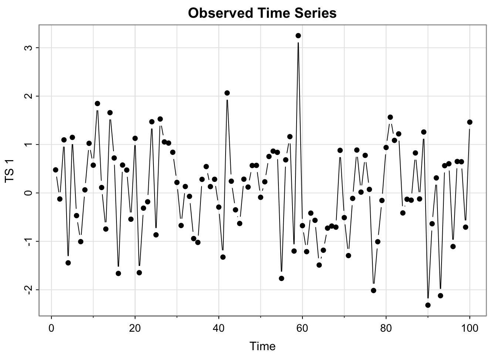
(extra content)ggplot version
library(ggplot2)
ggplot(all_ts, aes(x = Time, y = x_t)) + geom_point() + geom_line() + ylab("TS 1") + ggtitle("Observed Time Series #1")- In separate plot, again plot the time series as just points and also plot a moving average smoother over the time series (use any \(p\) you’d like, but use a symmetric one). Create a data frame called
all_tswith the original time series and the moving average smoother.
Code
tsplot(all_ts$x_t, type = "b", ylab = "TS 1", main = "Moving Average Smoother (5 point)", pch = 16 )
all_ts$ma_x_t <- stats::filter(x_t, filter =rep(1/5,5), sides = 2)
lines(all_ts$ma_x_t, col = "magenta", lwd = 2)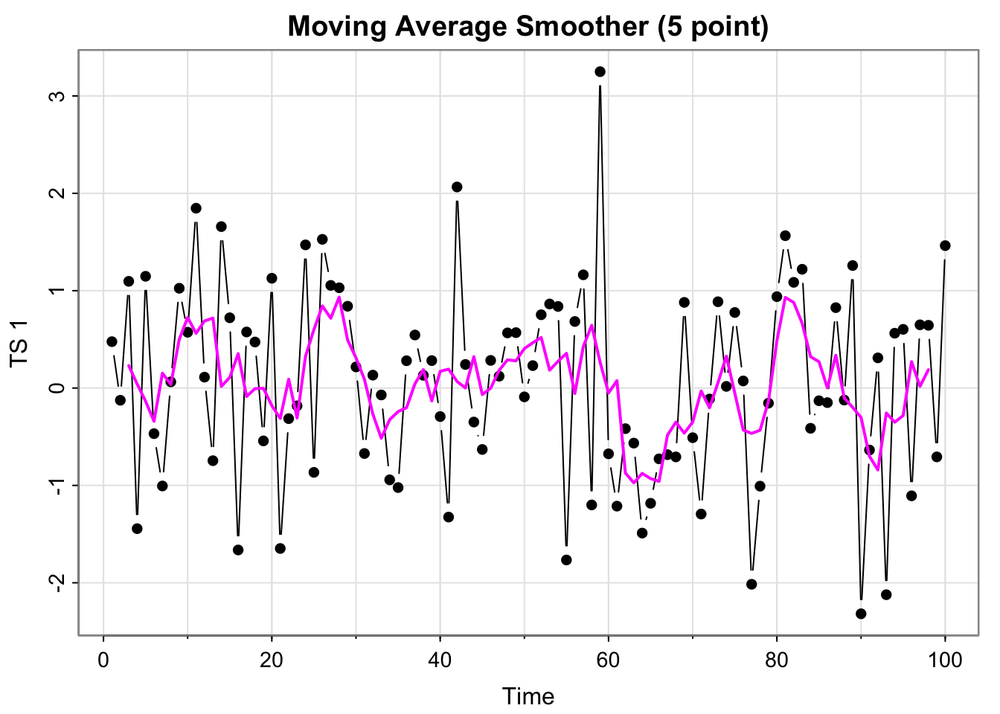
(extra content)ggplot version
ggplot(all_ts, aes(x = Time, y = x_t)) + geom_point() + geom_line() +
geom_line(aes(x= Time, y = ma_x_t), col = "magenta") +
ylab("TS 1") + ggtitle("Detrended - Moving Average Smoother (5 point)")- Detrend the time series with respect to the moving average estimate and plot the de-trended time series as points and lines. Save the detrended series in
all_ts.
all_ts$detrended_ma <- all_ts$x_t - all_ts$ma_x_t
tsplot(all_ts$detrended, type = "b", ylab = "TS 1", main = "Detrended - Moving Average Smoother (5 point)", pch = 16 )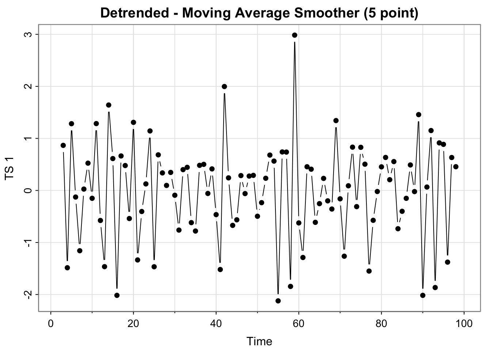
(extra content)ggplot version
ggplot(all_ts, aes(x = Time, y = detrended_ma)) + geom_point() + geom_line() +
ylab("TS 1") + ggtitle("Detrended - Moving Average Smoother (5 point)")- In a separate plot, again plot the time series as points and also plot a simple linear regression line using
time(x)where x is the time series you are analyzing. Add the fitted values to theall_tsdata frame.
lm_x_t <- lm(x_t~Time, data = all_ts)
tsplot(all_ts$x_t, type = "b", ylab = "TS 1", main = "Linear Trend", pch = 16)
all_ts$reg_x_t <- lm_x_t$fitted.values
lines(all_ts$reg_x_t, col = "turquoise", lwd = 2)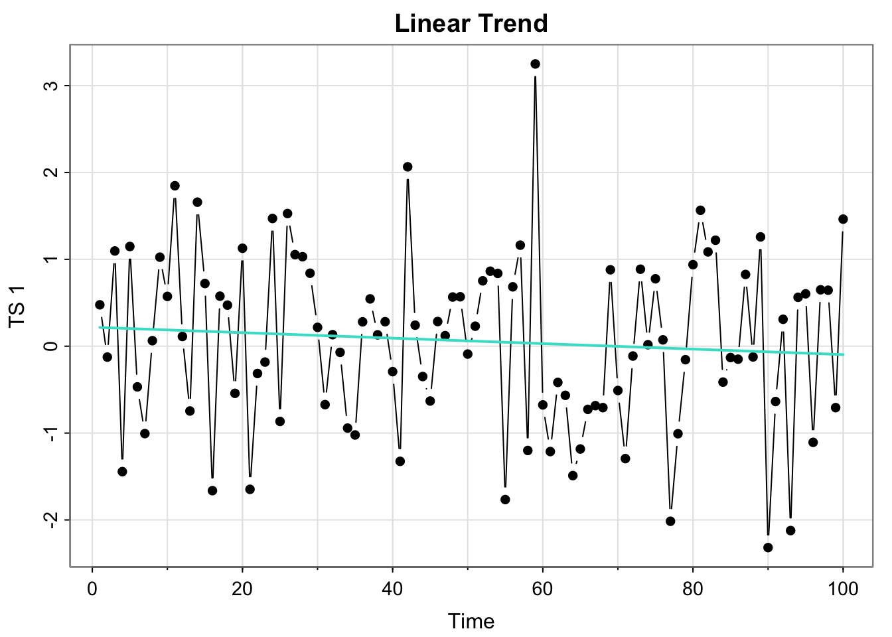
(extra content)ggplot version
ggplot(all_ts, aes(x = Time, y = x_t)) + geom_point() + geom_line() +
ylab("TS 1") + ggtitle("Linear Trend") + geom_line(aes(x= Time, y = reg_x_t), col = "turquoise") - Detrend the time series with respect to the regression and plot and save the detrended series (save in the all_ts data frame).
all_ts$detrended_reg <- all_ts$x_t - all_ts$reg_x_t
tsplot(all_ts$detrended_reg, type = "b", ylab = "TS 1", main = "Detrended - Linear Trend", pch = 16 )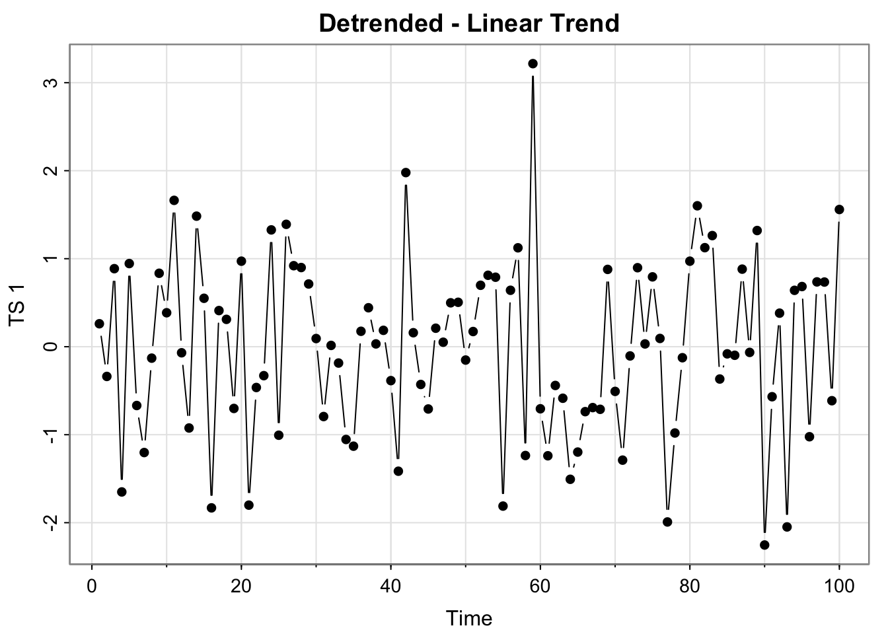
(extra content)ggplot version
ggplot(all_ts, aes(x = Time, y = detrended_reg)) + geom_point() + geom_line() +
ylab("TS 1") + ggtitle("Detrended - Linear Trend")- Difference the time series, plot as points and lines and save the differenced series.
all_ts$differenced <- c(diff(all_ts$x_t), NA)
tsplot(all_ts$differenced, type = "b", ylab = "TS 1", main = "Differenced Series", pch = 16 )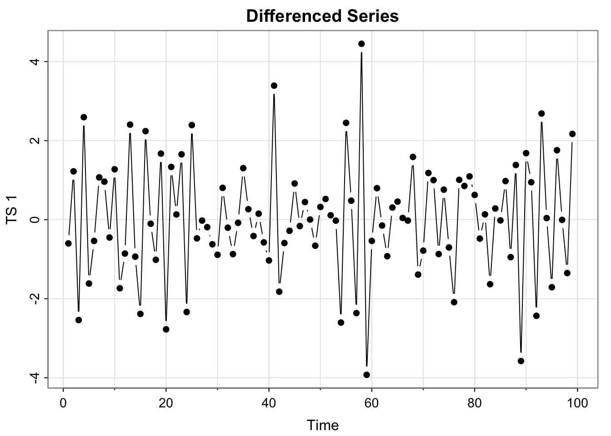
(extra content)ggplot version
ggplot(all_ts, aes(x = Time, y = differenced)) + geom_point() +
ylab("TS 1") + ggtitle("Differenced Series")Run par(mfrow = c(2,3))and then re-run the plotting code for all 6 plots you just made in steps 1-6.
par(mfrow = c(2,3))
# number 1
tsplot(all_ts$x_t, type = "b", ylab = "TS 1", main = "Observed Time Series", pch = 16)
## number 2
tsplot(all_ts$x_t, type = "b", ylab = "TS 1", main = "MA(5) Smoother", pch = 16 )
lines(all_ts$ma_x_t, col = "magenta", lwd = 2)
# number 3
tsplot(all_ts$detrended_ma, type = "b", ylab = "TS 1", main = "Detrended - MA(5)", pch = 16 )
# Number 4
tsplot(all_ts$x_t, type = "b", ylab = "TS 1", main = "Linear Trend", pch = 16)
lines(all_ts$reg_x_t, col = "turquoise", lwd = 2)
# number 5
tsplot(all_ts$detrended_reg, type = "b", ylab = "TS 1", main = "Detrended - Linear Trend", pch = 16)
# Number 6
tsplot(all_ts$differenced, type = "b", ylab = "TS 1", main = "Differenced", pch = 16 )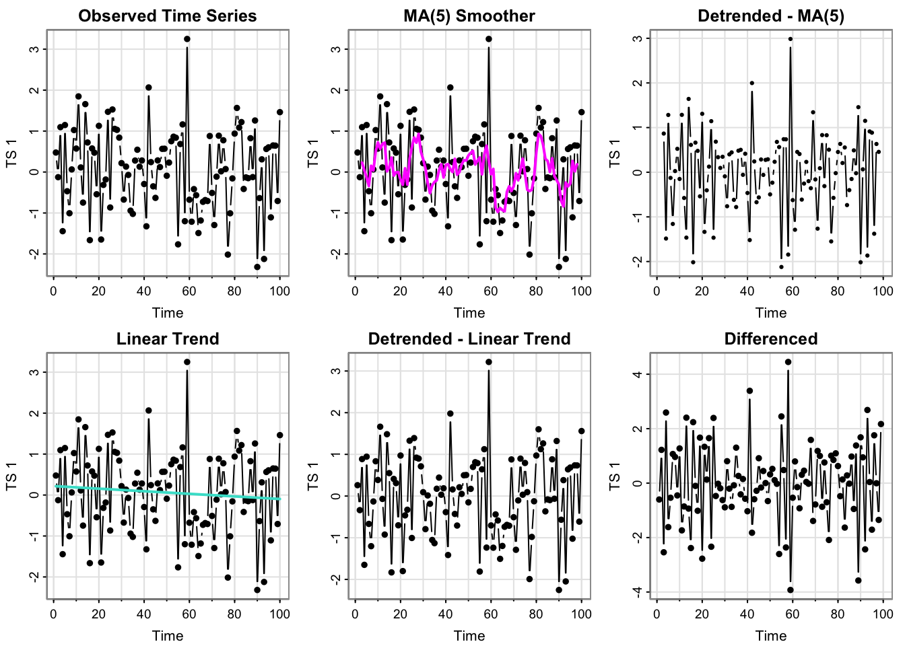
Short answer answers
- Which plots look like stationary time series?
In terms of the “data” (black points/lines in upper left and middle and lower left), the plot looks fairly stationary– no increasing or cyclical trend, and looks fairly similar to white noise (which is stationary). The detrended (MA and Linear) and the differenced plots look very similar, so they seem stationary as well.
In terms of the time series generated from creating trend estimates from each time point, we have two: the MA(5) and the linear trend. The linear trend is very slightly negative, but essentially horizontal– stationary.
The MA(5) smoother has fluctuations but those don’t seem to be explicitly based directly on time (or for particular time lags, i.e. not seasonal), which would suggest stationarity (though perhaps some temporal structure– we can check the acf.)
Regression significance tests that suggest white noise.
Running summary(lm_x_t) contains the test statistics and p-values for some hypothesis tests for the regression parameters.
- Here, we have a p-value of 0.369 for the test for a zero slope, meaning we do not have evidence the slope of the trend is not zero.
- The default test of significance for the y-intercept is actually testing whether it’s 0, and that we also fail to reject that the y-intercept is different from 0 (p-value 0.285.
In other words, we fail to find evidence that the mean is not constant and 0, which is true for white noise. So it kinda seems like white noise.
- Can you guess the model/source of \(x_t\) from these plots?
It looks like white noise, but the acf can give us more insight into that in Activity 4.
- How many trends have we estimated?
We have estimated two trends. Note that differencing a series does not give us an estimate of the trend.
Activity 3
Use the function process_ts to create the plots for the remaining series.
Note that we estimate the same two trend models (MA(5) and linear) for each series (though the particular parameters will be different for each of the raw series).
source("Code/process_ts.r")process_ts(time_series$y1, ptitle = "TS1")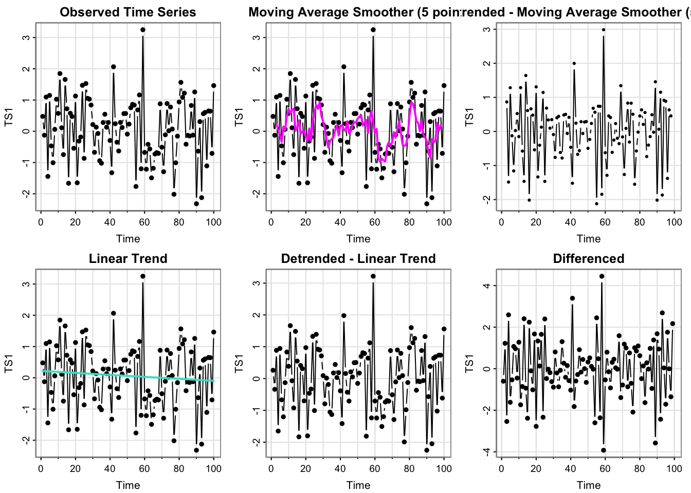
- Which plots look like stationary time series?
see above
- Can you guess the model/source of \(x_t\) from these plots?
see above
process_ts(time_series$y2, ptitle = "TS2")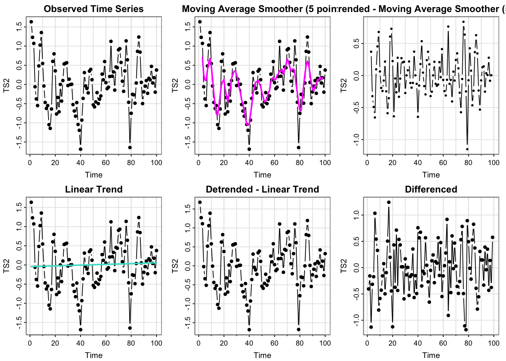
Which plots look like stationary time series?
The detrended MA and differenced series look very much like white noise, which implies stationary.
The detrended linear trend is almost identical to the raw data (which makes sense since the linear regression estimates essentially a constant mean of 0).
The raw data does not appear to have an overall increasing trend, nor any predictable seasonal patterns (not a linear trend stationary, unless I was being mean). However, it does not really look like white noise.
So that means y2 may be a moving average or perhaps real data.
How I could have been mean
Technically, a (deterministic) linear trend stationary model with the usual regression residuals with mean and y-intercept 0 is equivalent to white noise.
- Can you guess the model/source of \(x_t\) from these plots?
Not exactly! The Acf will reveal more about the temporal structure.
process_ts(time_series$y3, ptitle = "TS3")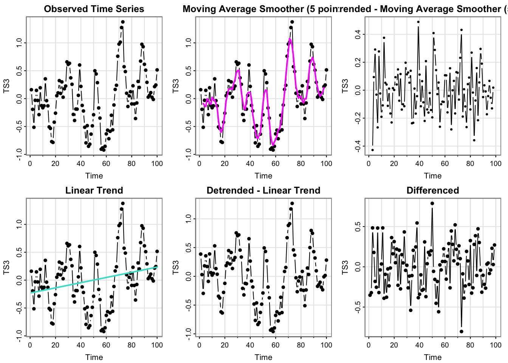
- Which plots look like stationary time series?
- Can you guess the model/source of \(x_t\) from these plots?
(Answering both) The plots for y3 are somewhat similar to those for y2, so this may be the duplicated model (not white noise, though). However, there are some differences. The linear trend is more pronounced, but still appears somewhat shallow. Looking at the raw series, the appearance of temporal structure is even more pronounced. So, perhaps this the deterministic linear model with a very shallow trend (technically still nonstationary), or it’s a moving average, or real data.
process_ts(time_series$y4, ptitle = "TS4")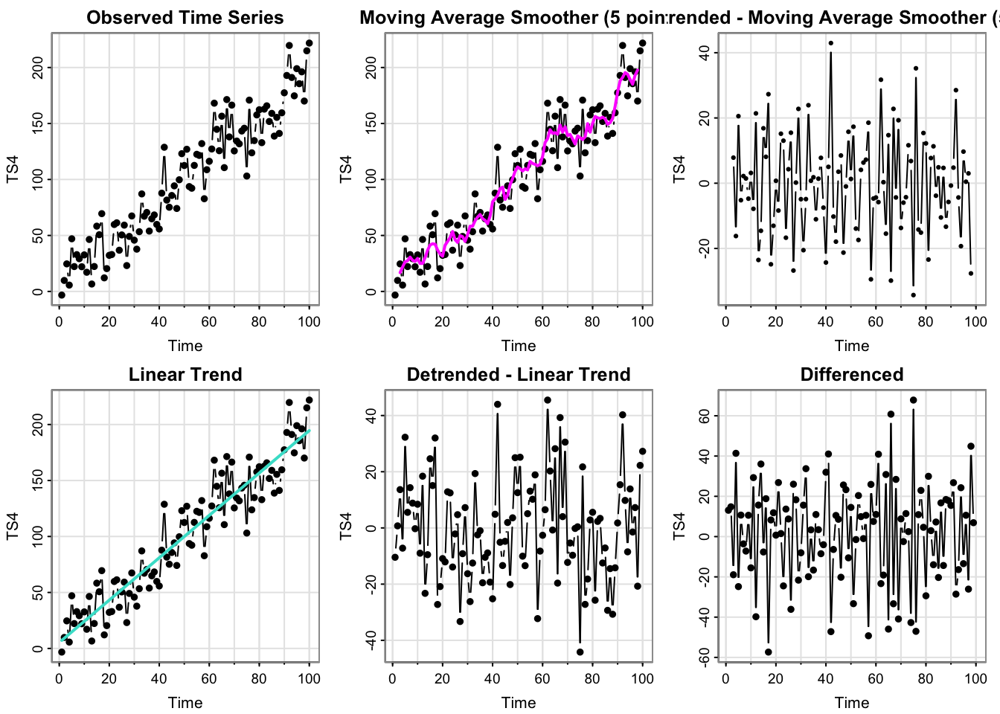
- Which plots look like stationary time series?
The detrended and differenced plots look stationary. The observed time series looks like an obvious deterministic linear trend, which the linear trend and moving average trend pick up on (though the moving average is a “bumpy” estimate of the linear trend– but there does not appear to be any cyclical structure.)
- Can you guess the model/source of \(x_t\) from these plots?
This could technically be real data, if that real data followed a perfect linear trend in time. It’s definitely not white noise or a pure moving average model (generated from white noise).
process_ts(time_series$y5, ptitle = "TS5")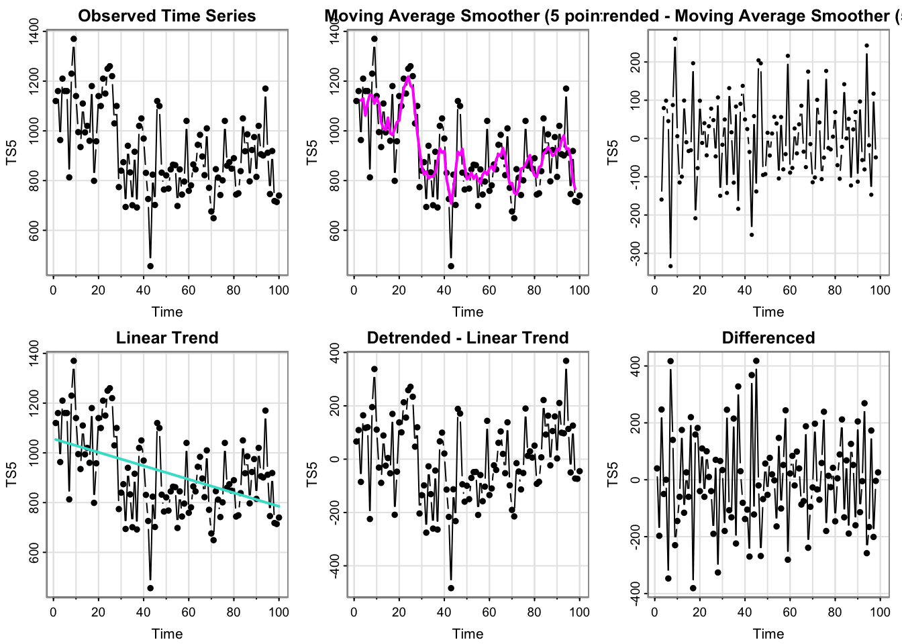
- Which plots look like stationary time series?
The MA-detrended and differenced series look stationary. The raw data looks like it is at one level for the beginning of the series and then drops down for the remainder. That pattern is more pronounced in the moving average overaly plot. The linear trend is decreasing, but does not appear to capture the pattern of the data very well (the decrease in the data is abrupt, not linear and gradual).
- Can you guess the model/source of \(x_t\) from these plots?
None of the models (moving average, linear trend, white noise) can have an abrupt change in level like we see in this time series. By process of elimination, this appears to be the real data.
Activity 4
library(patchwork)
plot_acfs <- function(dataset, main){
all_ts <- process_ts(dataset, ptitle = "", output = T, plots = F)
p <- forecast::ggAcf(all_ts$x_t) + ylim(-1,1) + ggtitle(names(all_ts)[1]) + plot_layout(nrow = 2, ncol = 3)
for(i in names(all_ts)[!(names(all_ts)%in% c("Time", "x_t"))]){
g <- forecast::ggAcf(all_ts[, i]) + ylim(-1,1) + ggtitle(i)
p <- p + g+ plot_layout(nrow = 2, ncol = 3) + plot_annotation(title = paste(main))
}
p
}plot_acfs(time_series$y1, main = "TS 1")Registered S3 method overwritten by 'quantmod':
method from
as.zoo.data.frame zoo 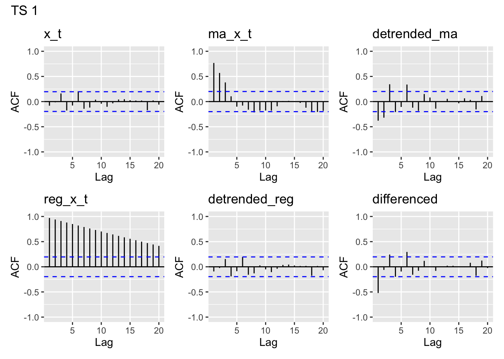
plot_acfs(time_series$y2, main = "TS 2")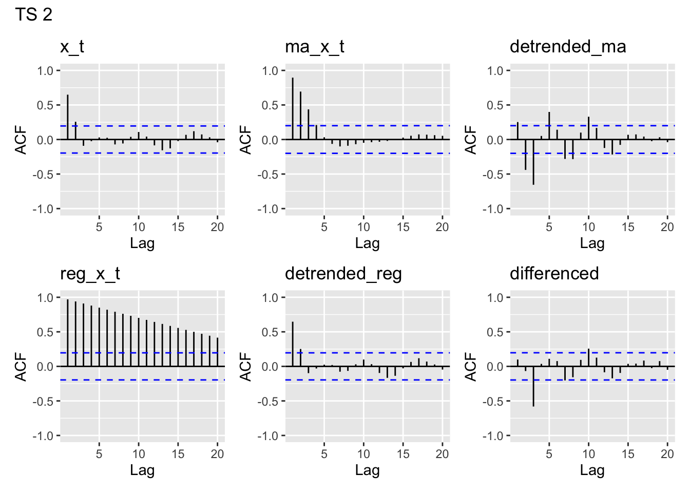
plot_acfs(time_series$y3, main = "TS 3")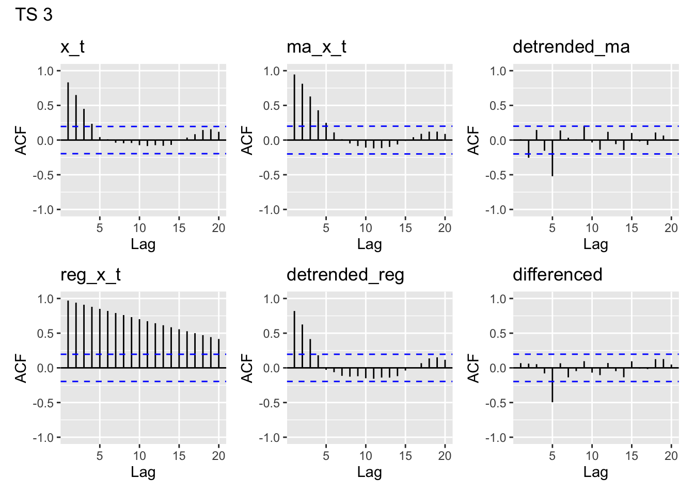
plot_acfs(time_series$y4, main = "TS 4")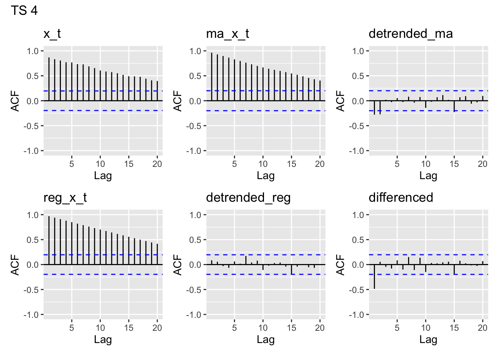
plot_acfs(time_series$y5, main = "TS 5")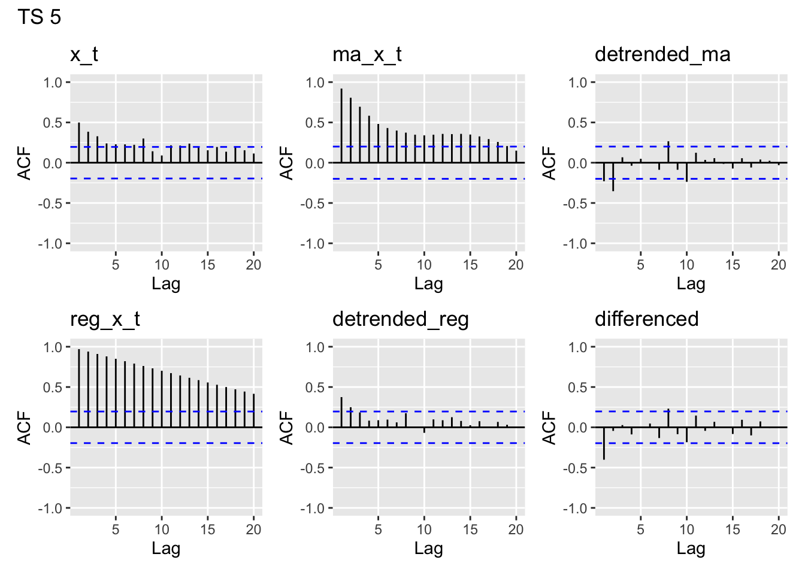
ACF of the y’s
y1- looks like white noisey2- clearly has lag 1 autocorrelation, maybe a but at lag 2, then drops off. A bit of a pattern in later lagsy3- has autocorrelation for lags 1-4, then drops off around 5. A bit of a pattern in later lags likey2, but more pronounced thany2.y4- This is the one we think is the linear trend model. Clearly there is nonstationarity in the acf of the data, which we’d expect to see from a linear trend.y5- This looks unlike any of the others. There appears to be moderate lag 1 autocorrelation which drops off slowly.
ACF of the MA(5) estimates
y1- Since it appears we started with white noise, it makes sense that we can clearly identify a moving average structure in the time series that we made by applying a moving average. We are seeing the structure we built into our MA(5) trend estimate.y2- Looks very similar toy1.y3- Similar to the first two, but has larger autocorrelation for lags 1-4.y4- Looks the same as the acf ofy4, and drops off very slowly. Our MA estimate essentially is a linear trend, so it’s not surprising to see this structure in the acf.y5- Again, this looks like none of the others. We see the larger autocorrelation at small lags induced by the MA smoothing, but we also see more persistent long-range lag relations.
ACF of the MA-5 detrended
None of the MA(5)- detrended series look particularly like white noise, which is what we would want to see if we had fully accounted for the temporal structure in our model.
y1- has some temporal structure, likely due to the fact that we appear to have started with white noise and then subtracted out the MA structurey2- has even more structure thany1y3- looks like white noise, except for a peak aty5y4- looks almost like white noise, except for lag 1 and 2 showing some modest negative autocorrelationy5- looks kind of like the white noise, but perhaps has a bit of structure
ACF of the linear trends
These all look very similar. That is because each of our linear trend models are deterministic functions of \(t\)– they will show this autocorrelation regardless of the steepness of the slope (unless it’s literally 0).
ACF of the linearly detrended
y1- Looks like white noise– unsurprising since we subtracted off a near horizontal trend of 0, and we suspect a linear modely2- has significant autocorrelation at lag 1– looks like the regression does not have independent errors, so probably not a great modely3- same asy2, but has a larger autocorrelation and for lags 2 and 3 as welly4- Looks like white noise– unsurprising since we linearly detrended and we suspect a linear model.y5- Not quite like white noise (most autocorrelations are small but positive), but doesn’t look too bad.
ACF of the differences
y1- Significant lag 1 autocorrelation (makes sense since we differenced white noise, which added some dependence)y2- Significant lag 3 autocorrelationy3- Significant lag 5 autocorrelationy4- some lag 1 autocorrelationy5- some lag 1 autocorrelation
Simulation solutions.
set.seed(0016)
N <- 100
## Simulate white noise.
y1 <- rnorm(N)
## Simulate an MA(3)
w <- rnorm(N+50)
y2 <- stats::filter(w, filter = rep(1/3,3),
method = "convolution", sides = 2)[2:101]
## Simulate an MA(5)
w <- rnorm(N+50)
y3 <- stats::filter(w, filter = rep(1/5,5),
method = "convolution", sides = 2)[10:109]
## Simulate trend stationary
w <- rnorm(N, 0, 20)
time_index <- 1:N
y4 <- 2.718 + 1.96*time_index + w
## real data
data(Nile, package = "datasets")
y5 <- as.vector(Nile)Why doesn’t the acf of the MA(5) look like white noise?
I’m not exactly sure, but something about the estimation procedure in the
stats::filter()functionIf you fit using the
arimafunction, it looks fine:
ma_5_mod <- arima(time_series$y3, c(0,0,5))
acf(ma_5_mod$resid)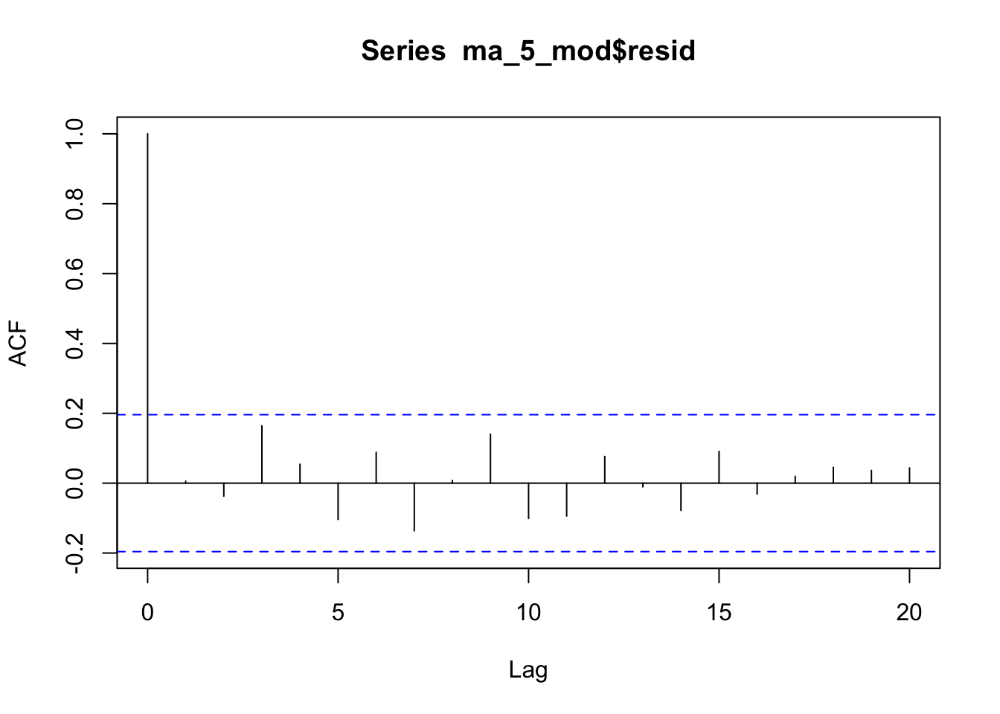
- Estimation procedure matters!
A bit about the Nile Data
tsplot(Nile, xlab = "Year", ylab = "Discharge at Aswan, 10^8 m^3", main = "Annual Volume")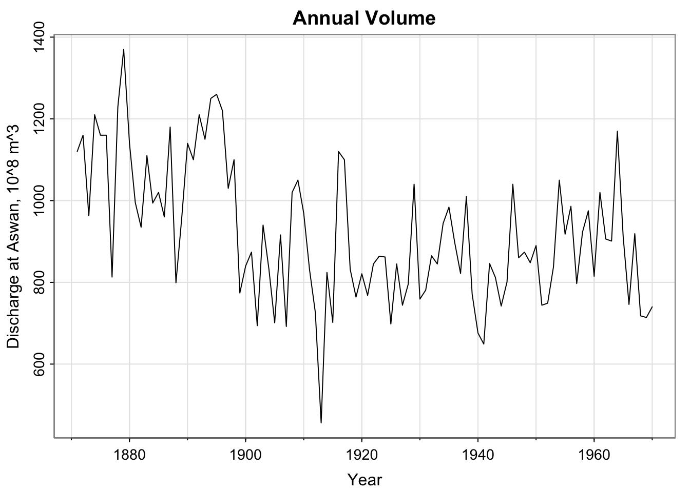
Where’s Aswan?
Sun directly overhead at noon on the summer solstice– where the circumference of the earth was calculated like 2000 years ago. So cool!!! (not related to this data set(?))

A bit about the Nile Data
“Level shift visible in the data at 1898” – how do we model “abrupt changes in distribution”?
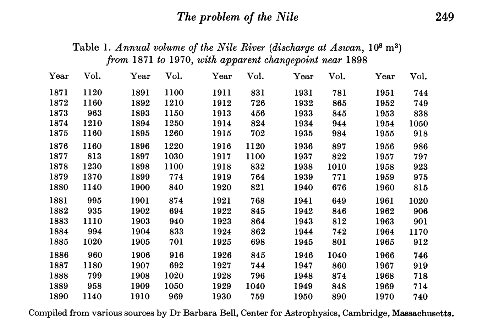
Check out the paper!
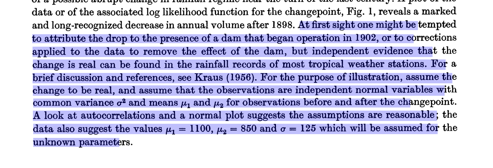
Who’s Barbara Bell?
She’s not cited formally… (data sets now get their own DOIs, ideally)
Got her PhD at Harvard in 1944 in Astrophysics
- History of women at Harvard/Radcliffe (a bit of a bummer to read)
From (one of) her Obituary(ies):
“Working with Donald Menzel, Harold Glazer, Giancarlo Noci and Robert Kurucz, her research dealt primarily with observations of solar phenomena. Barbara had a keen interest in history and travel, and in her later years traveled to all corners of the globe. She developed a particular interest in the ancient history of Egypt. Her research expanded to include the variations in the floods of the Nile for which she sought to connect to solar fluctuations. Using ancient accounts, she was first to propose a linkage between prolonged drought and the societal collapse she called ”The First Dark Age in Egypt” in the early 1970s. She published several journal articles on the connection of climate fluctuations to the fall of Egyptian dynasties which have been widely cited in the literature. Loved by all who knew her, Barbara had a sharp and curious mind, a kind heart and a cheerful disposition. Intensely interested in her family and those around her, she donated generously her entire life to Harvard University and numerous charities. A beloved sister and aunt…”